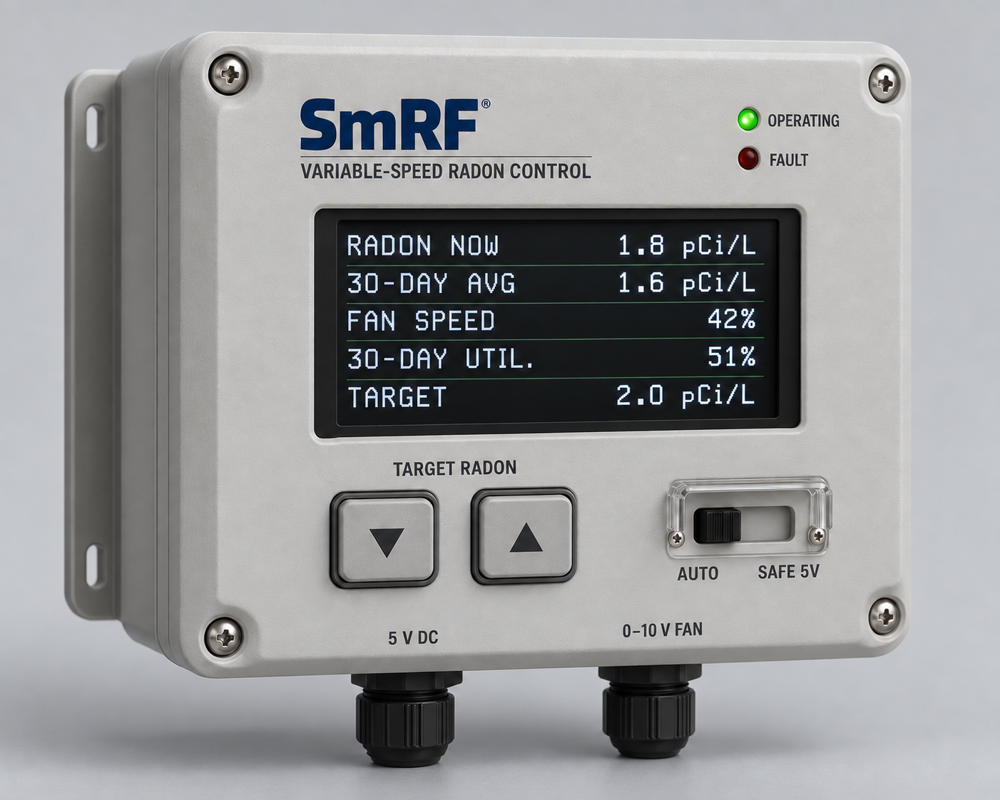
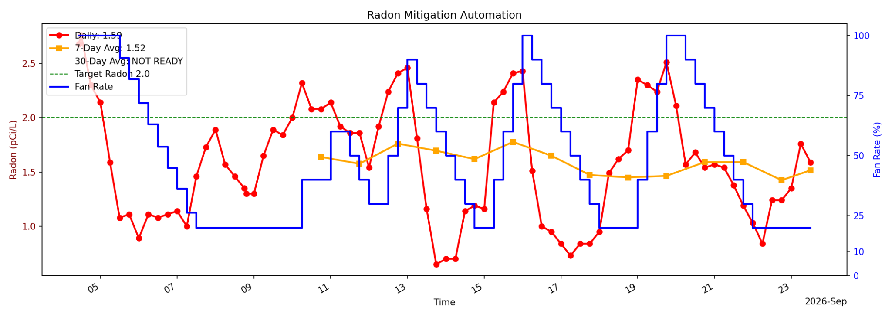

⌁
Integrated CRM
Radon measurement is part of the controller, eliminating dependence on a separate consumer monitor.
SmRF Mini continuously measures radon and automatically adjusts a Fantech EC variable-speed fan to maintain the selected target.

A complete local control loop—not merely an always-on fan.
The integrated CRM continuously measures the indoor radon level.
The local controller compares the latest measurement with the selected target.
A hardwired 0–10 V signal commands the compatible Fantech EC fan.
New readings show the response, and the control cycle continues.
Reliable low-cost radon sensing and EC variable-speed fans now make continuous, target-based mitigation practical.
Radon measurement is part of the controller, eliminating dependence on a separate consumer monitor.
SmRF Mini regulates fan output instead of leaving the fan at one fixed operating point.
See current radon, 30-day average, fan speed, fan utilization, target, and operating status.
The entire measurement and control process operates inside the home without internet service.
Existing SmRF prototypes have generated the operating data needed to develop and validate the variable-speed control algorithms that SmRF Mini will use.

SmRF Mini delivers the essential CRM-to-fan control loop in the simplest product. SmRF WiFi adds connectivity while preserving local operation. SmRF Viewer provides the remote monitoring layer for connected installations.
The first integrated CRM-to-fan control loop for residential mitigation: measurement, target selection, automatic 0–10 V fan control, and local verification.

The extensively developed connected SmRF platform combines local variable-speed control with WiFi reporting, remote diagnostics, software support, and installation visibility.

The Viewer turns connected installations into a remotely visible fleet with performance history, operating status, attention rules, reports, and service information.
We welcome conversations with fan manufacturers, radon equipment distributors, mitigation professionals, contract manufacturers, and research organizations.